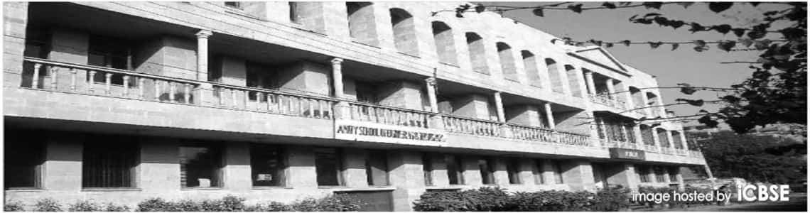
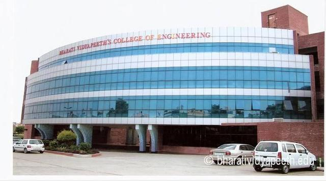
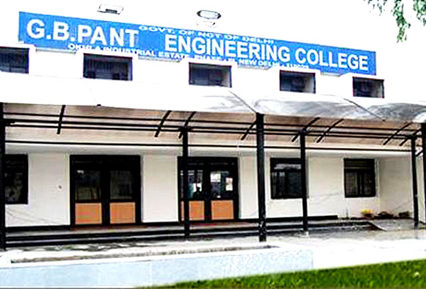
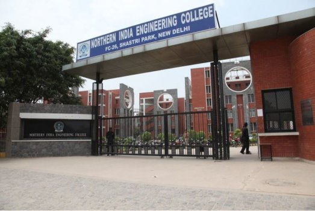

ABOUT COLLEGES
1.USIT(Main Campus)
Location:
University School of Information Technology (USIT) is located inside the newly constructed and recently shifted campus of Guru Gobind Singh Indraprastha University (GGSIPU) at Sector 16, Dwarka. It’s about one and a half kilometre from Dwarka Sector 14 Metro station on the Blue line and can be accessed in three ways; a 15 minute walk, a 7 rupee per person rickshaw ride or a free bus ride provided by the University itself. So in terms of accessibility it’s not bad once you manage to reach the Metro station.
Infrastructure:
The campus is a huge one with lots of open areas, refreshing gardens and sports facilities underway. The hostels are also in the pipeline and will be opened to the students by this academic year.
However, there is a lack of proper parking space and the students are required to park their cars under the hot sun which turns their cars into furnaces during the summers. The library is common to all departments; it’s a two storey structure with enough space which, however, hasn’t been utilised appropriately and there are few places to sit and read books.
Fees:
Rs. 48,000/- per year
Placements:
Again the students come up with a disgusted face and say “We had anticipated so much, and finally we land up with everyone else”. Average salaries come to around Rs. 4L a year, nothing great, most of the other engineering colleges manage to place students with nearly the same packages. TCS is the major recruiter there, and TCS is the major recruiter here! Microsoft, Google and Adobe do visit the campus but they just pick up a handful of lucky, (rather talented) chaps.
Contact:
University School of Information Technology
GGS Indraprastha University,
Sector 16 - Dwarka, Delhi.
Tel: 011 - 23900326
Website: http://ipu.ac.in/usitnweb/index.htm

2.MSIT
About :
This AICTE approved Institute under GGSIP University is ideally located in the Institutional area of Janakpuri, New Delhi. It has a campus spread over eight acres of land with beautiful eco-friendly surroundings. Institute was earlier operating from four storey building of 6279 sq.m of built up area. Recently it has been shifted to a more spacious seven storeyed building with built up area of 9660 sq.m The institute has over a short span of time acquired and developed impressive infrastructure, expertise and resources for imparting high quality engineering education. The institute runs in two shifts - First/Morning shift and Second/Evening shift providing Bachelor of Technology in CSE, IT, ECE and EEE streams.
Infrastructure :
The infrastructure consists of well lit lecture halls, fully furnished labs, seminar halls, staff rooms, a large size play ground etc. For the fresh students there are well equipped labs for ‘Applied Sciences’, ‘Applied Mechanics’ and ‘Electrical Engg. Lab’ in addition to a well established ‘Workshop’ and a well lit ‘Drawing Hall’. The six modern air-conditioned networked computers labs cover entire range of Computer Science & IT subjects like Software Engg., Network Technology, Mobile Computing, Artificial Intelligence & Robotics, Computer Graphics, Compiler Construction, Analysis & Design of Algorithms, Interface Programming, Data Structure, DBMS & Object Oriented Programming. All labs have licensed software such as Visual Studio, .Net 2003, Auto Cad 2004, MS Office Professional 2003, Oracle 9i, TASM, Orcad, Windows XP. The software is updated and upgraded frequently as per the requirements and demands of the training. High speed, around–the–clock internet access using a radio link is also available. Students are offered real software projects relating to the current industry requirments to facilitate smooth transition from academics to industrial environment. The Electronics & Comm. Engg. Department has eight modern laboratories covering all the important subjects eg. Analog Electronics Lab, Control Engg. Lab, Microwave Devices lab, Digital Image Processing Lab,Consumer Electronics Lab, Digital Circuits & Systems Lab and Microprocessors lab. Recently a VLSI Design Lab and a Satellite & Mobile Comm. Lab have been also added. Adequate licenced MATLAB tool boxes,Tanner tools as well as the kits of IPGA/CPLD microprocessors and advanced microprocessors are available to give the students clear insight into design and development processes. Faculty is supported by a well trained technical staff. A full backup power supply is available for the campus round the clock.
Contact Us:
Address
C-4 Janak Puri, New Delhi-110058
Phones
25528117, 25552667
Email
director@msit.in

3.ASET
ASET Bijwasan
Amity is the leading education group of India with over 80,000 students studying across 1000 acres of hi-tech campus. At Amity we are passionate about grooming leaders who are not only thorough professionals but also good human beings with values and sanskars. This is just one of the many reasons given below, why we are consistently ranked no.1
Add: 580, Bijwasan, Palam vihar road, near IGI airport, New Delhi-110061, Website www.amity.edu
Courses offered:
Electronics and Communication Engineering
Computer Science and Engineering
Information Technology
Mechanical and Automation Engineering
fees:
85,000 Rs.
Contact:
+(91)-11-28062106, 28061487, 28062105, 28061821 580,
Location:
Delhi Palam Vihar Road, Bijwasan, Delhi - 110061 (Map) Institutes , Institutes For B Tech
Send Enquiry By :
Email www.amity.edu
Hours of Operation (View all)
Today 09:30 am - 05:30 pm Open
Also Listed in
Institutes Institutes For B Tech Engineering Institutes Institutes For B Tech Engineering
Year Established
1999

4.BVCOE
About:
Bharati vidyapeeth’s college of engg., New Delhi since its establishment in 1999, has strived to provide the best engineering education to its students through well qualified and dedicated faculty and provision of well equipped modern labs.
The college affiliated to Guru Gobind Singh Indraprasth University, New Delhi, and approved by All India Council for Technical Education (AICTE), Ministry of HRD, Govt. of India, BVCOE is steadily striding forward in its quest of establishing itself among the top engineering colleges in North India.
The vision of the college is to continuously excel and thus coming together enlivens the research themes, creates awareness about upcoming technologies and provide platform to budding research workers for achieving their rightful place in the scientific community
Training & Placement :
Training & Placement Dept strives to make students trained on new areas on chosen co- curricular and extra curricular matters.
Our Institute offers CCNA course through our CISCO Certified Network Academy. The College conducts training programme in collaboration with leading multinational company in the areas of Mobile Computing, VLSI, Embedded Systems etc. Our Institute also conducts Industrial Training programme for the students. This is for the preparation for campus recruitment programmes with an attempt to match the future aspirations of the students with the expectations of the corporate sector. The prominent organizations like Aricent, ABB,Bechtel,TCS, HCL Technologies Ltd., Indian Navy, Airforce, Nagarro, Essar Group, Emerson Power Network, Windmoller & Holscher, Lurgi, CB&I, SIEMENS, Keane India, CSC, SIEMENS, YAMAHA Motors etc. visit us every year.
Allmost all the students get placed with these companies before they finish their studies. Around 15 – 20% students join reputed institutions of higher education in India such as IITs, IIMs, XLRI, IISc, and other foreign universities for PG Programmes.
The institute conducts In-house Summer Training in the area of Embedded Systems, VLSI, Dot Net, Mobile Telephony, CCNA, Control & Automation. The institute organized camp for students to promote self-employment programme of the government.
Address: A 4,Paschim Vihar, New Delhi 110063,
(In front of Paschim Vihar East Metro Station.)
Contact No.: 011-25278444/25278443.

5.Mait
Location:
Located in the farthest Northwest of Delhi in an extremely remote area of Rithala (sector 22 of Rohini region), Maharaja Agrasen Institute of Technology, usually referred as MAIT, is roughly 6-8 kilometres from Rithala metro station. Even though the college is located in a jungle (this is what all the students mutter), the metro feeders and Grameen seva (10 seater auto) charge you Rs. 10 till the college gate. Moreover, the services of these autos are pretty awesome. So, metros are the most sought after mode of commutation.
Infrastructure:
The college building is pretty impressive and has one of a kind infrastructure. The stereotype red brick building has a neat and clean campus and filled with hundreds of students due to the number of courses offered. The classrooms are not air conditioned but have comfortable benches. The library is well equipped with books available in abundance. The campus is wifi enabled and thus socializing isn’t a problem. The strategic feature of the campus is the way different buildings are connected. They have a unique staircase which is very innovative and quite appealing.
There is no hostel facility for girls within the campus. Fortunately, boys have one within the campus where there’re single and double seaters. The hostel charges are roughly around Rs. 17,000/- per year and the facilities are pretty average and nothing to boast about.
Fees:
Rs. 90,000 per year

6.GBPIT
G B Pant Engineering College was established by the Govt. of NCT of Delhi in the year 2007 with the aim of imparting quality technical education for the students of Delhi and nearby areas. Since its inception, the faculty and staff have been tirelessly working towards the growth of the institution.
Affiliated to Guru Gobind Singh Indraprastha University and approved by AICTE, the college started with two batches of students, one each for Mechanical Engineering and Electronics and Communications Engineering courses. Increasing its horizon in the year 2010, a batch of Computer Engineering course was started in the college. With the presence of vibrant and dynamic faculty members of highest academic calibre selected by UPSC, G B Pant has been able to produce three batches of engineering graduates who have been pursuing their careers in companies and higher education institutes in India and abroad.
The college has been operating from its building in G B Pant Polytechnic campus which has been transformed to be equipped with ultra-modern facilities. The college has already established various labs for all the branches with up to date modern equipment which ensures that the students are trained in the practical realm according to the current industry standards. The college is in the process of making its own building with state of the art facilities
objective:
To develop analytical skills and problem solving capabilities in the students by educating them in appropriate streams of technology and computational methodologies
To develop an interdisciplinary perspective - and - train the students to work with people belonging to different social, cultural, regional and national backgrounds.
To develop inter-personal, technical and soft skills in the students and - train them for decision making in real life engineering, managerial and human resource related problems.
To inculcate - professional ethics and a sense of responsibility towards physical, social, economic, political and cultural environment.
To inculcate the habit and an attitude for life long learning in our students.
Fees:
Rs. 56,ooo per year
contact:
Govind Ballabh Pant Engineering College (Govt. Of NCT of Delhi)
Okhla Industrial Estate, Phase-III
New Delhi-
110020
India
Phone:+911126382314 Telephone : :+911126382314
Fax:+91-11-26382317 Fax +91-11-26382317
mailto:principal@gbpec.edu.in Email principal@gbpec.edu.in

7.BPIT
In view of the national and international scenario of the growing demand of qualified technical personnel in different streams of engineering technology and management, Bhartiya Brahmin Charitable Trust in 2005 laid the foundation of Bhagwan Parshuram Institute of Technology (BPIT). BPIT is approved by the Ministry of Human Resource Development, Government of India and the Directorate of Training and Technical Education, Government of National Capital Territory, Delhi. It is affiliated to Guru Gobind Singh Indraprastha University, Delhi and offers courses of Bachelor of Technology (B.Tech) and Master of Business Administration (MBA), which are approved by the All India Council of Technical Education (AICTE).
The institute is situated at a prime location on Dr. K.N. Katju MargBPIT is spread in an area of about 5.7 acres and has four storey building of academic and office complex with lifts. A girl student's Hostel having 64 double occupancy rooms, with all modern amenities has been constructed and furnished and it will be functional from the session 2011-12. A well stacked large library having state of art facilities has been developed. Laboratories and workshops have the best quality of equipments commensurate with the requirements of the curriculum of IP University and beyond. There are eight computer laboratories, each equipped with the required number of computers, having latest hardware configuration and the latest software's.
BPIT strives to provide accurate learning and industry oriented culture by means of its enriched practical training programs for the students in different courses offered in different semesters. The students in second and third year are offered in-house training facilities in the fields like Computers, Networking, Computer Applications, Internet Technologies, Electronic Hardware Design, Simulation and Analysis etc.
contact:
BHAGWAN PARSHURAM INSTITUTE OF TECHNOLOGY
PSP- 4, Dr. K.N. Katju Marg , Sector 17 Rohini,
New Delhi -110089
Tel: 011 - 27572900 , 27571080
011 - 27574635 , 27574637 (10 lines)
Fax: 011-27574642
Email: bpitindia@yahoo.com
Website: http://www.bpitindia.com

8.NIEC
Northern India Engineering College (NIEC), New Delhi was established by BBDES, LUCKNOW in the year 2003. NIEC has an aesthetically designed campus spread over approximately 9 acres of lush green environment at Shastri Park. The Campus comprises of five interconnected blocks covering a built up area of approx. 3.0 Lac sq, ft. NIEC offers following Under Graduate and Post Graduate level full time Professional programs approved by AICTE in affiliation with Guru Gobind Singh Indraprastha University (GGSIPU), Delhi.
TRAINING AND PLACEMENT
The College has an exclusive Training and Placement Cell. This Cell is entrusted with the task of creating opportunities for summer training from various companies and industrial visits to the students. Personality Development Programmes are conducted every year to the students to enable them acquire proper soft skills. Training and Placement Cell also arranges Guest Lectures by eminent personalities from various industries to make the students aware of the upcoming technology/trends in industries. Along with these activities, the cell plays a major role for the placement of the students by inviting reputed companies in our campus for recruitments. College also provides pool campus for the students from other institutions. In-house training is also conducted for B.Tech/MBA/MCA students by renowned companies like Purple Leap, Sofcon, Cadzone and Ranstad India Ltd., to impart professional and technical training.
Mission
To provide the best possible education facilities.
To emphasize on value-based education through multi-grade modern teaching methodologies.
To develop sensitivity in our students to be responsible citizens of the nation to think in the direction of improving the quality of life and meeting society needs.
To sustain an active partnership program with industry and other academic institutes with an aim to promote intellectual exchanges and resource sharing.
To conduct value-added training programme for students.
To enhance their "employability".
To ensure holistic development of student's personality.
contact:
Mission
To provide the best possible education facilities.
To emphasize on value-based education through multi-grade modern teaching methodologies.
To develop sensitivity in our students to be responsible citizens of the nation to think in the direction of improving the quality of life and meeting society needs.
To sustain an active partnership program with industry and other academic institutes with an aim to promote intellectual exchanges and resource sharing.
To conduct value-added training programme for students.
To enhance their "employability".
To ensure holistic development of student's personality.
